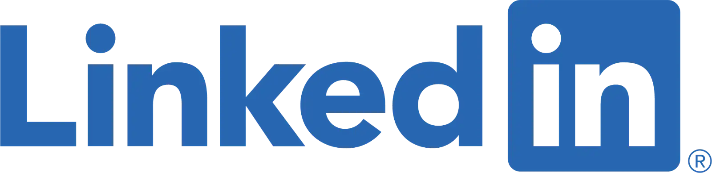
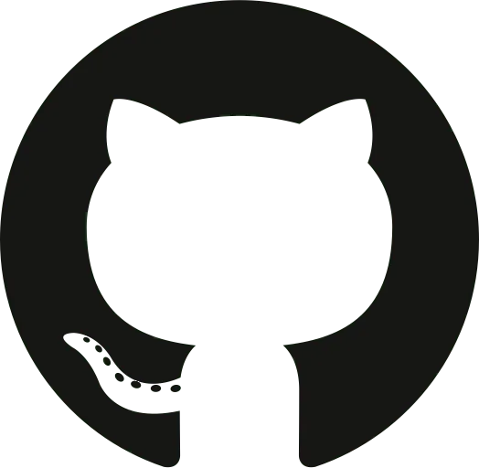

I am interested in Programming/Computer Science internships for the Summer of 2024.
This website is a project of mine, I haven't done any web development before, and I wanted to learn some basic HTML and CSS. It also serves as an expansion to my LinkedIn or Resume, a way to link to my other accounts, and a place to post about projects I may be working on.
I also made this site on a single HTML file and CSS file, without any Javascript, as a challenge for myself. This site is a WIP.
Connect with me on Linkedin
Check out my Github
richar92@students.rowan.edu
blake@irisrichardson.com
856-472-1492
Hello! My name is Blake Richardson, I'm currently a student pursuing a Bachelors of Science in Computer Science at Rowan University, I'm interested in software development, game development, electronics, and most everything technology related. I've been using computers since I was in kindergarten, and my interest in technology, electronics, and machines has been a constant throughout my life. My father worked in IT so I was surrounded by computers from a young age, so I built my first PC out of an old Intel Xeon workstation from 1999 and various spare parts we had laying around. Several years later I saved and built a decent PC, and after that I got into laptop repair. In highschool I got into programming, custom electronics, robotics, and just the more technical parts of computers in general. Since graduating high school most of my focus outside of schoolwork has been in Rowan University's chapter of ACM, their game jams, and personal projects such as this one. My goal is to work as a software engineer, and right now I am primarily interested in an internship for the summer.
This website is a work in progress, these categories will be elaborated upon later on, but the headings are here to give a general idea of the sorts of projects I untake or have tried in the past.
I am currently attending Rowan University pursuing a Bachelor's of Science in Computer Science. Thus far I've been satisfied with my work in my classes, as of my first semester I am on the Dean's List for GPA. I've mostly been taking required courses related to my major such as an object oriented programming class, and I'm also taking a German class hoping to eventually get a Minor in German. I've also been contemplating a Math minor as well. Outside of class I am part of the Rowan University chapter of ACM, and I enjoy attending the meetings along with the meetings of the various sub-committees. I'm a part of the Game Development committee, and so I took part in the game jam last semester. This was a competition in which we had to build a game from scratch in a month, using whatever engine of our choosing, working with a maximum of four teammates. I did it with a friend, and in the process I learned a lot about Godot 3, Blender 3D modelling, and programming within a 3D engine, it was a lot of fun. In addition to this I was also included in a cross department project with Engineering about recycling glass on campus, where I automated their collection spreadsheet and also physically moved crates of glass to storage. This opportunity came to me, oddly enough, through a connection I made in my on campus job in the art department, where I work in the Westby Print Lab.
I attended Clearview Regional High School for four years, where I took nearly all the technology adjacent classes I possibly could, along with four years of German. In addition to the electives, I was heavily involved in the FTC robotics program as the lead programmer for 15458 Green Machine. FTC is a robotics competition in which there is a different game scenario every season, and the teams must build robots that can score points in the game. This naturally involved a lot of cooperation between the programmers, builders, modellers, and drivers, as we all learned to work alongside one another towards a larger goal. This program is also what lead me to learn Java in high school, which helped me when I took AP Computer Science A and scored a 4 on the AP Exam. I am appreciative of the opportunities that this school offered me, including my first job, with the tech department there, and the connections I made along the way.